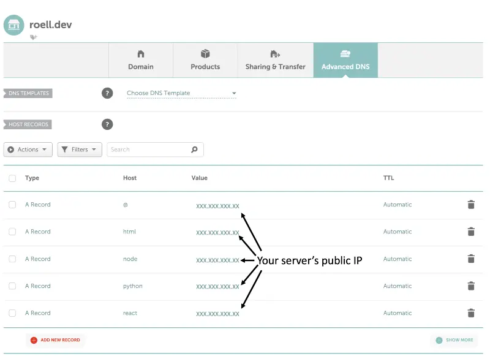

How to host 10+ sites for $5 per month
This is not a paid advertisement. It is an endorsement of a product I like.
This guide explains how to set up Nginx on a DigitalOcean droplet to host 10+ websites for $5 a month. It covers the following types of websites:
You will need at least one custom domain name to complete this tutorial. Subdomains can be used to host each project at its own url.
Step 1. Create a DigitalOcean account
Step 2. Create a droplet
Create a droplet using the create button on the top navigation bar. A droplet is linux virtual machine with its own IP address. Choose the $5 option which comes with 1GB Memory / 25GB Storage / 1TB Bandwidth. Select the following options:
Leave all other settings as their default options.
Create a root password to allow you to access your server, and skip ssh setup.
Step 3. Set up server
Find your server's public IP address on the DigitalOcean dashboard. Remotely access your server using a command line tool (On mac, I recommend iTerm2).
$ ssh root@your_server_ip
The root user can make destructive changes. To avoid accidents, it is best practice to use a non-root account. Create a non-root user (use your name instead of mine) with a strong password, and skip all other questions.
$ adduser garrett
Grant administrative privileges to the new user. This command appends (-a) the user, garrett, to the group (-G) sudo.
$ usermod -aG sudo garrett
Log out of the root user session.
$ exit
Log back into server using the new account.
$ ssh garrett@your_server_ip
Step 4. Install Nginx
Nginx is a high performance web server.
Update server.
$ sudo apt-get update
Install nginx.
$ sudo apt-get install nginx
Confirm that the server is running default Nginx page.
http://server_domain_or_IP
Step 5. Clone git repository with shell projects
This repo contains example projects for html, react, node, and python projects.
Make sure that you are in your home directory so the apps folder has the location /home/garrett/apps/.
$ cd ~
$ git clone https://github.com/garrettroell/droplet_set_up.git apps
Step 6. Choose the type of site you'd like to host
Step 7. Connect a domain name to your server
You need a domain name for this step. You can purchase one for about $10/year at Namecheap.
In these examples, I use roell.dev. I'll demonstrate how a single domain can host multiple sites using subdomains.
Add an A record to connect your domain name to your server. Put '@' as the host if you want to use the top level domain, or put a string as the host to use a subdomain. The image below is the Namecheap interface, but other domain providers should have similar DNS configuration interfaces.
Confirm that the url is connected to your server.
$ dig html.roell.dev
$ dig react.roell.dev
$ dig node.roell.dev
$ dig python.roell.dev
If the domain is connected, you should see your server's IP address. It may take more than a few minutes for the DNS changes to propagate.
Step 8. Configure Nginx to host an HTML page
Inspect the ~/apps/html folder.
$ cd ~/apps/html
$ ls
Open index.html.
$ nano index.html
This is the default index.html file. Replace my name with yours, and exit the editor by pressing "command + x" and then "y" and then "enter."
<html>
<head>
<title>Welcome to Garrett's html site</title>
</head>
<body>
<h1>Welcome to Garrett's html site!</h1>
</body>
</html>
Create an nginx configuration file named html.roell.dev. It is common practice to have this file's name match the domain name it configures.
$ sudo nano /etc/nginx/sites-available/html.roell.dev
Copy and paste this code into the file. Exit the editor by pressing "command + x" and then "y" and then "enter."
server {
listen 80;
server_name html.roell.dev;
root /home/garrett/apps/html/;
index index.html;
location / {
try_files $uri $uri/ =404;
}
}
Enable the configuration file by making a symbolic link.
$ sudo ln -s /etc/nginx/sites-available/html.roell.dev /etc/nginx/sites-enabled/
Check the Nginx configuration for syntax errors.
$ sudo nginx -t
Restart Nginx.
$ sudo systemctl restart nginx
Step 8. Configure Nginx to host a React app
Inspect the ~/apps/react folder.
$ cd ~/apps/react
$ ls
Install npm.
$ sudo apt install npm
Install n, a node version manager.
$ sudo npm install --location=global n
Use the most recent long term support (lts) version of node.
$ sudo n lts
Install dependencies. Make sure you are in ~/apps/react when you run this command.
$ sudo npm install
Open src/App.jsx.
$ nano src/App.jsx
This is the default App.jsx file. Replace my name with yours, and exit the editor by pressing "command + x" and then "y" and then "enter."
import { useState } from "react";
import logo from "./logo.svg";
import "./App.css";
function App() {
const [count, setCount] = useState(0);
return (
<div className="App">
<header className="App-header">
<img src={logo} className="App-logo" alt="logo" />
<p>Hello from Garrett's React app</p>
<p>
<button type="button" onClick={()=> setCount((count) => count + 1)}>
count is: {count}
</button>
</p>
</header>
</div>
);
}
export default App;
Rebuild site so 'dist' folder contains your change.
$ sudo npm run build
Create an nginx configuration file named react.roell.dev. It is common practice to have this file's name match the domain name it configures.
$ sudo nano /etc/nginx/sites-available/react.roell.dev
Copy and paste this code into the file. Exit the editor by pressing "command + x" and then "y" and then "enter."
server {
server_name react.roell.dev;
root /home/garrett/apps/react/dist/;
index index.html;
location / {
try_files $uri /index.html;
}
}
Enable the configuration file by making a symbolic link.
$ sudo ln -s /etc/nginx/sites-available/react.roell.dev /etc/nginx/sites-enabled/
Check Nginx files for syntax errors.
$ sudo nginx -t
Restart Nginx.
$ sudo systemctl restart nginx
Step 8. Configure Nginx to host a node server
Inspect the ~/apps/node folder
$ cd ~/apps/node
$ ls
Install npm.
$ sudo apt install npm
Install n, a node version manager.
$ sudo npm install --location=global n
Use the most recent long term support (lts) version of node.
$ sudo n lts
Install dependencies. Make sure you are in ~/apps/node when you run this command.
$ sudo npm install
Open index.js.
$ nano index.js
This is the default index.js file. Replace my name with yours, and exit the editor by pressing "command + x" and then "y" and then "enter."
const express = require("express");
const app = express();
app.get("/", (req, res) => {
res.send("Welcome to Garretts node app");
});
app.listen(1234, () =>
console.log("Site is being hosted at http://localhost:1234.")
);
Install pm2, a process manager that runs node apps as background processes.
$ sudo npm install pm2 --location=global
Start the node server, and give it a custom name.
$ pm2 start index.js --name gr-node
Confirm your node server is online.
$ pm2 ls
Create an nginx configuration file named node.roell.dev. It is common practice to have this file's name match the domain name it configures.
$ sudo nano /etc/nginx/sites-available/node.roell.dev
Copy and paste this code into the file. Exit the editor by pressing "command + x" and then "y" and then "enter."
server {
server_name node.roell.dev;
location / {
proxy_pass http://localhost:1234
proxy_http_version 1.1;
proxy_set_header Upgrade $http_upgrade;
proxy_set_header Host $host;
proxy_set_header X-Forwarded-For $proxy_add_x_forwarded_for;
proxy_cache_bypass $http_upgrade;
}
}
This file publically exposes what is running on http://localhost:1234 on node.roell.dev. This is an example of a reverse proxy.
Enable the configuration file by making a symbolic link.
$ sudo ln -s /etc/nginx/sites-available/node.roell.dev /etc/nginx/sites-enabled/
Check Nginx files for syntax errors.
$ sudo nginx -t
Restart Nginx.
$ sudo systemctl restart nginx
Step 8. Configure Nginx to host a python server
Inspect the ~/apps/python folder.
$ cd ~/apps/python
$ ls
Install npm.
$ sudo apt install npm
Install n, a node version manager.
$ sudo npm install --location=global n
Use the most recent long term support (lts) version of node.
$ sudo n lts
Install packages for pip and python virtual environments.
$ sudo apt install python3-pip
$ sudo apt install python3.8-venv
Create a virtual environment, and activate it.
$ python3 -m venv venv
$ source venv/bin/activate
Install dependencies. Make sure you are in ~/apps/python when you run this command.
$ pip install -r requirements.txt
Open main.py.
$ nano main.py
This is the default main.py file. Replace my name with yours, and exit the editor by pressing "command + x" and then "y" and then "enter."
from fastapi import FastAPI
app = FastAPI()
@app.get("/")
def read_root():
return 'Hello from Garretts python app'
Install pm2, a process manager that runs python apps as background processes.
$ sudo npm install pm2 --location=global
Start the python server, and give it a custom name
$ pm2 start 'gunicorn -k uvicorn.workers.UvicornWorker main:app' --name gr-python
Confirm your python server is online
$ pm2 ls
Create an nginx configuration file named python.roell.dev. It is common practice to have this file's name match the domain name it configures.
$ sudo nano /etc/nginx/sites-available/python.roell.dev
Copy and paste this code into the file. Exit the editor by pressing "command + x" and then "y" and then "enter."
server {
server_name python.roell.dev;
location / {
proxy_pass http://localhost:8000
proxy_http_version 1.1;
proxy_set_header Upgrade $http_upgrade;
proxy_set_header Host $host;
proxy_set_header X-Forwarded-For $proxy_add_x_forwarded_for;
proxy_cache_bypass $http_upgrade;
}
}
This file publically exposes what is running on http://localhost:8000 on python.roell.dev. This is an example of a reverse proxy.
Enable the configuration file by making a symbolic link.
$ sudo ln -s /etc/nginx/sites-available/python.roell.dev /etc/nginx/sites-enabled/
Check Nginx files for syntax errors.
$ sudo nginx -t
Restart Nginx.
$ sudo systemctl restart nginx
Step 9. Add SSL with LetsEncrypt
Download certbot. This step only needs to happen once in the server's lifetime.
$ sudo apt install certbot python3-certbot-nginx
Add an automatically renewing SSL certicate to your domain.
sudo certbot --nginx -d html.roell.dev
sudo certbot --nginx -d react.roell.dev
sudo certbot --nginx -d node.roell.dev
sudo certbot --nginx -d python.roell.dev
Confirm that the site is working.
https://html.roell.dev
https://react.roell.dev
https://node.roell.dev
https://python.roell.dev